Ubicada en el corazón de Charalá, Santander, Casa El Cedro tiene el propósito de compartir la belleza de sus tierras con aquellos que buscan desconectarse.
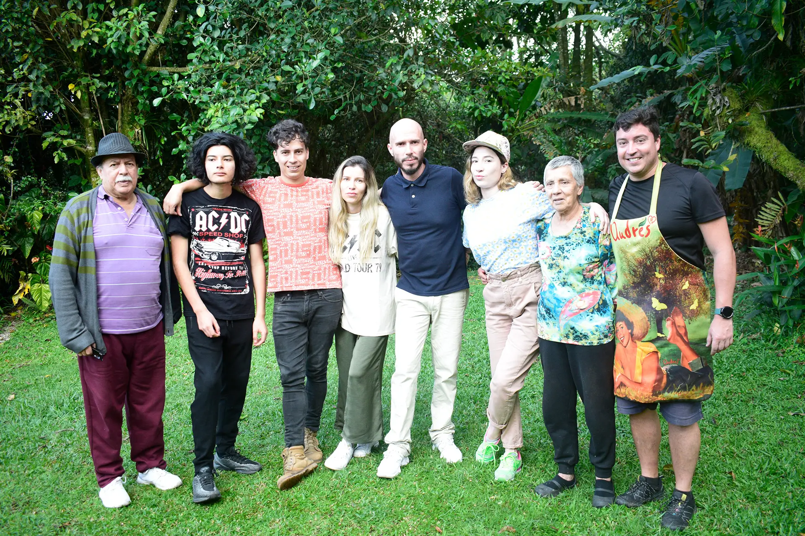
Casa El Cedro nace del sueño de abrir sus puertas de un hogar que rinde homenaje a la arquitectura campesina tradicional y a la naturaleza. Somos una familia santandereana que cree profundamente en el valor de su tierra.
Con el paso de los años, lo que comenzó como un hogar familiar se ha transformado en una pequeña reserva natural. Al estar ubicados al borde del Río Pienta, hemos asumido la misión de proteger este ecosistema, convirtiéndolo en un corredor ecológico vital para las especies nativas. Hoy, Casa El Cedro es un refugio donde la fauna local, desde aves migratorias hasta pequeños mamíferos del bosque, encuentran un lugar seguro y protegido.
Ofrecer un turismo consciente que invita a sus huespedes a descubrir la riqueza de Santander y a integrarse con la cultura local y el ecosistema.
Un recorrido visual por los colores, texturas y sabores que habitan nuestra tierra.
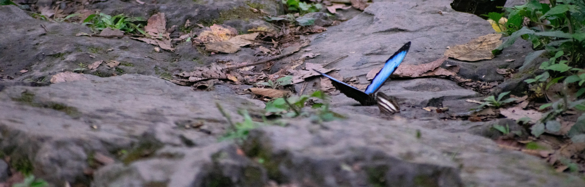
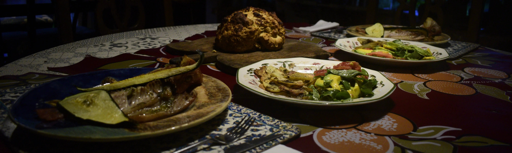
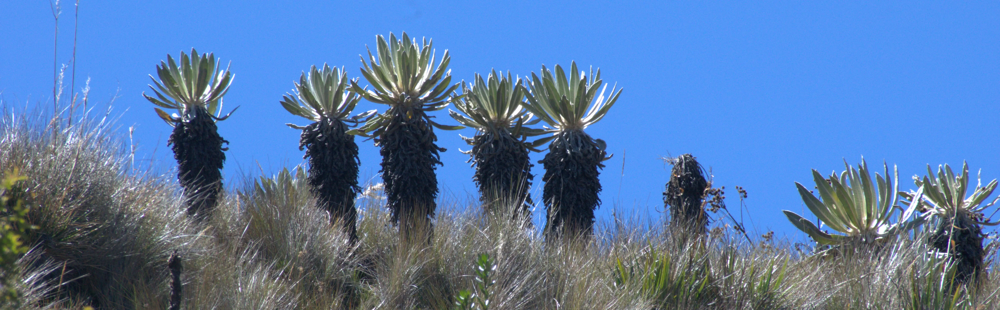
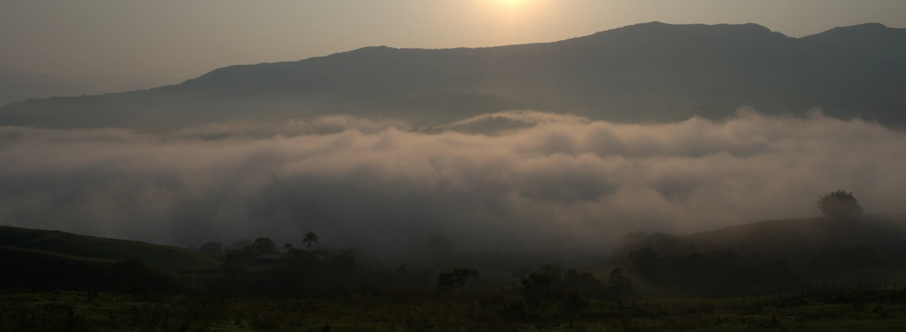
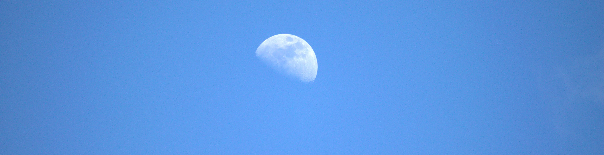
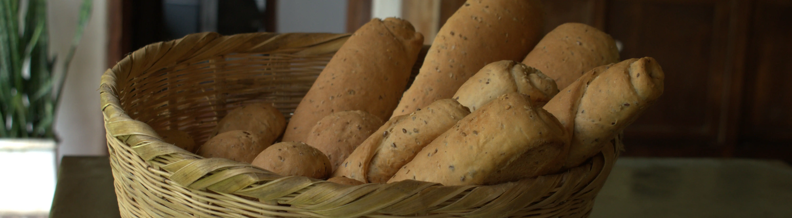
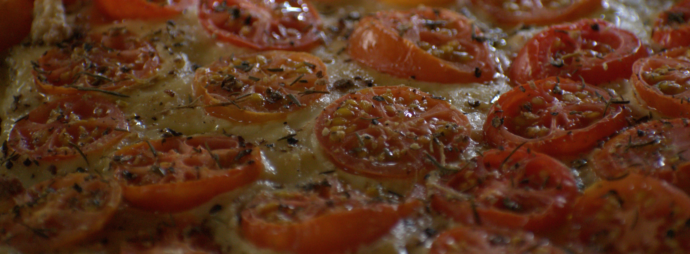
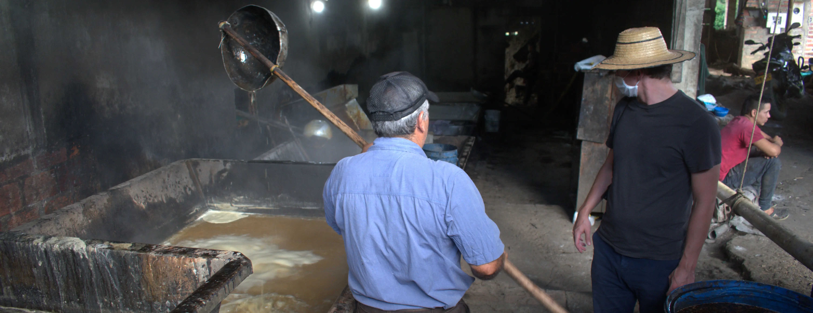
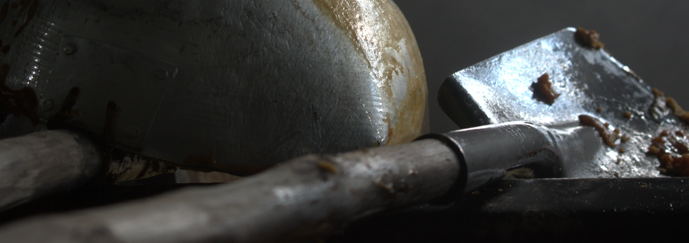
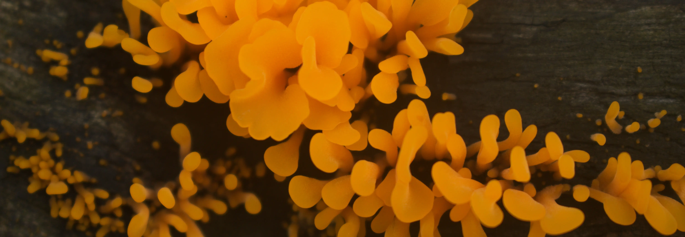
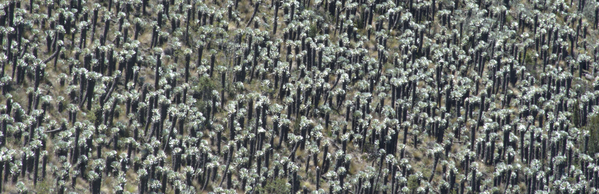
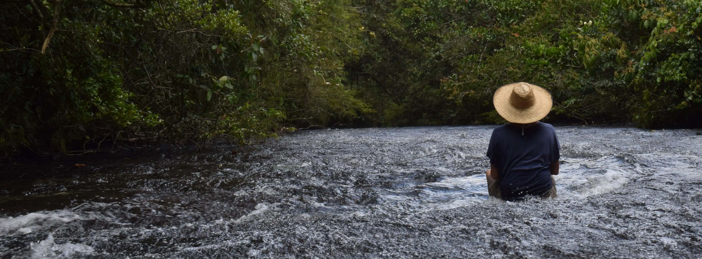
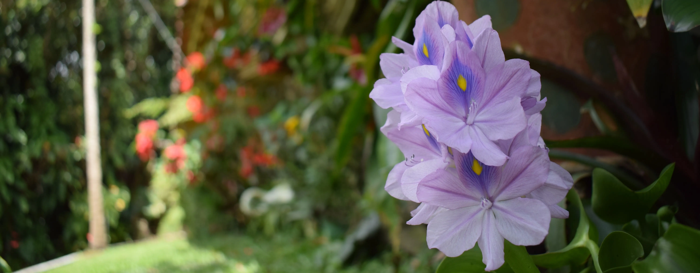
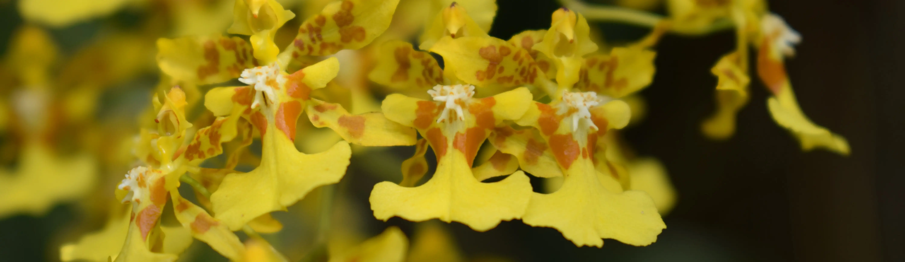
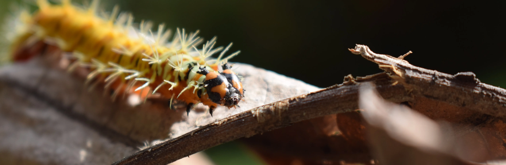
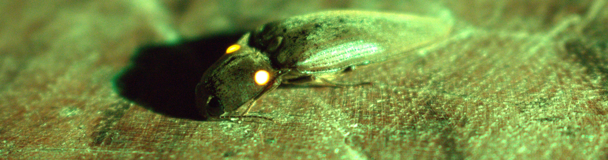
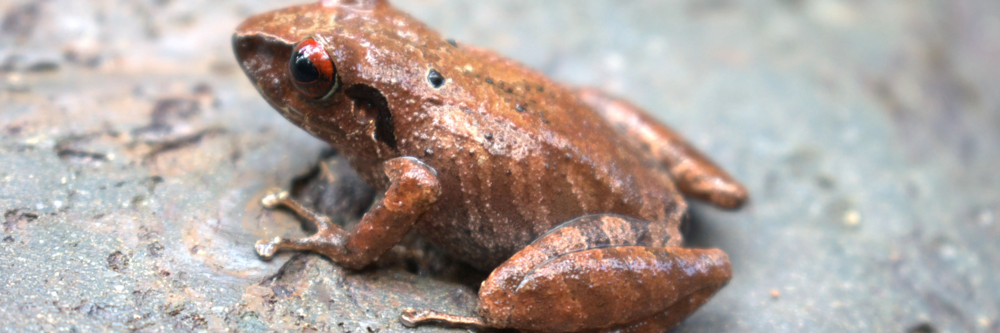
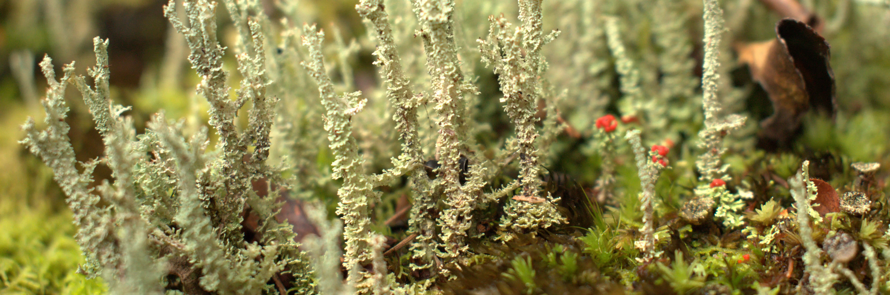
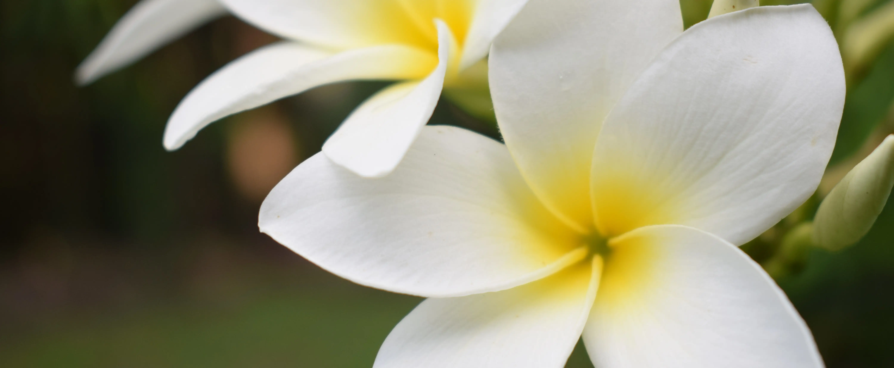
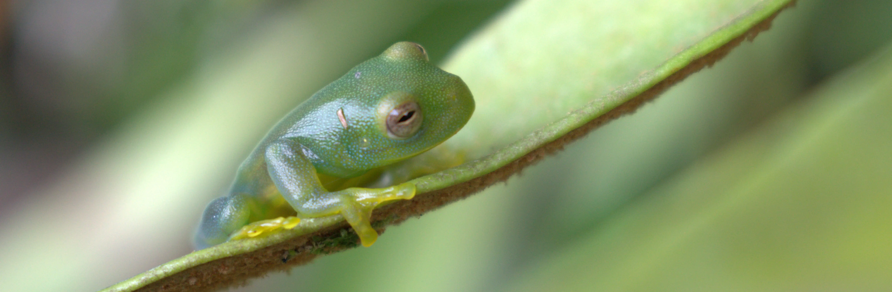
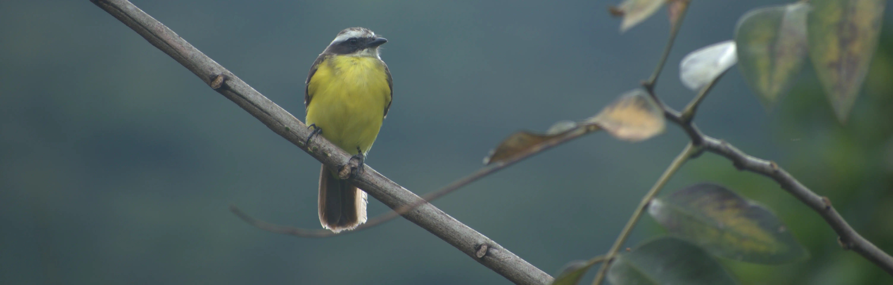
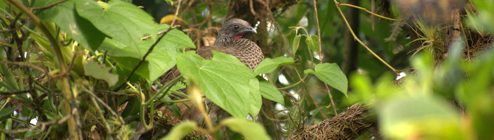
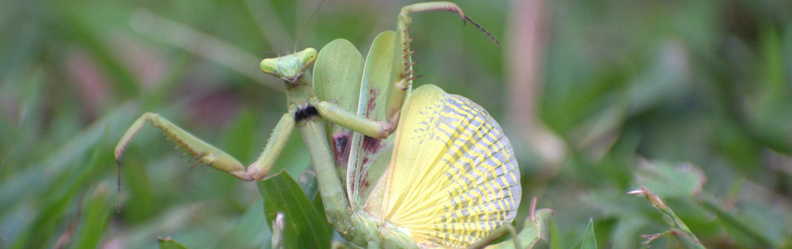
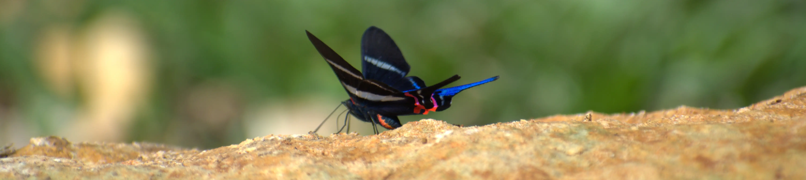
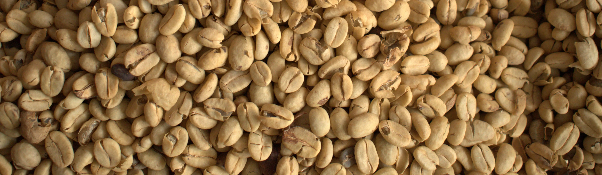